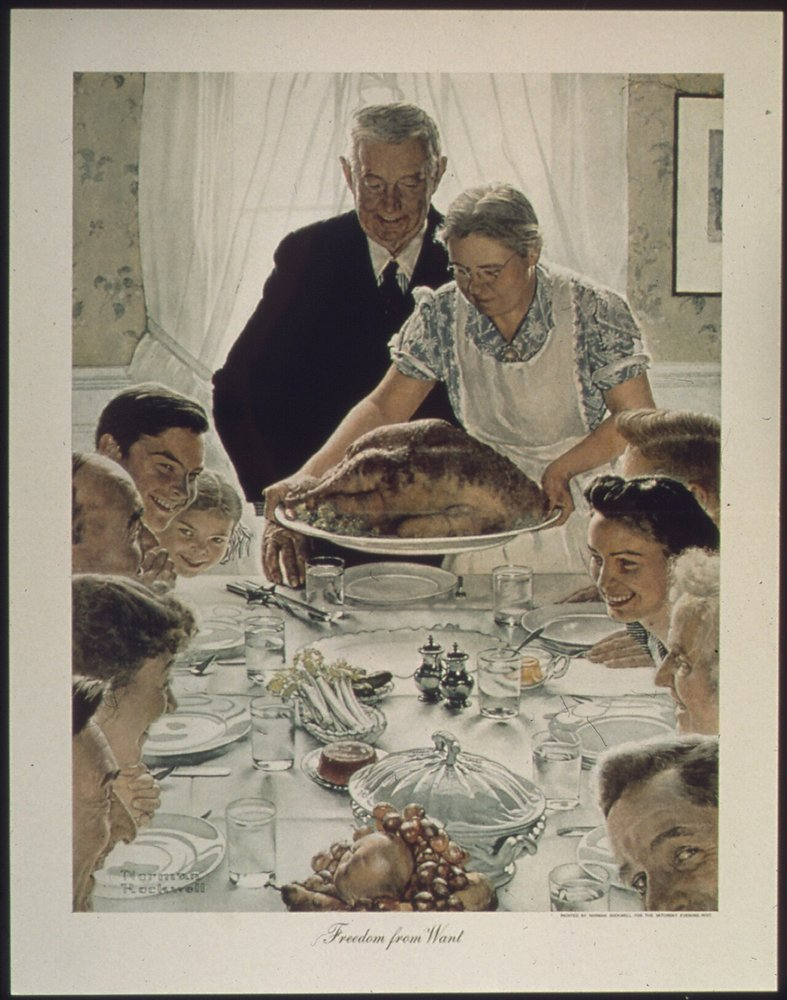

Freedom from Want
Norman Rockwell · 1943 · Oil on canvas · 116.2 × 90 cm · Norman Rockwell Museum, Stockbridge, Massachusetts
In copyright. Look and learn: shown for study, not for download.
Rockwell first offered his Four Freedoms sketches to the Office of War Information, and an official there rebuffed him; the editor of The Saturday Evening Post, Ben Hibbs, took the series instead. He painted this one in November 1942 and the Post published it on March 6, 1943. The people at the table were his friends and family in Arlington, Vermont, photographed one at a time and painted into the scene. He photographed his cook presenting the turkey on Thanksgiving Day 1942, and said he painted the turkey that day.